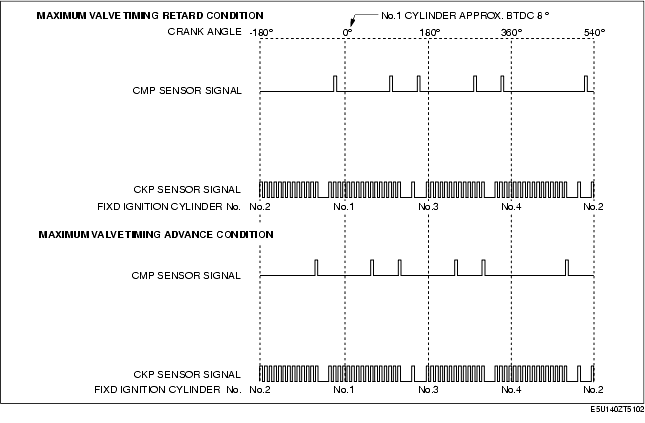
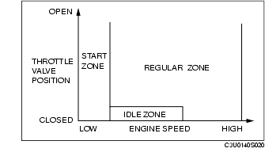

Technical Guide ➭ ENGINE ➭ CONTROL SYSTEM[L8, LF] ➭ ELECTRONIC SPARK ADVANCE (ESA) CONTROL OPERATION [L8, LF]
ELECTRONIC SPARK ADVANCE (ESA) CONTROL OPERATION [L8, LF]
id0140i7179500
{: #wp1059779}
Ignition Method
• The PCM excites the ignition coils employing either fixed ignition or cycle estimated ignition according to engine operation conditions.
|
Ignition timing {: #wp1059890} |
Ignition coil energization period {: #wp1059892} |
|
|---|---|---|
|
Fixed ignition {: #wp1059806} |
Fixed at BTDC 8 ° {: #wp1059808} |
Fixed period at BTDC 8 ° to end of energization {: #wp1059864} |
|
Cycle estimated ignition {: #wp1059911} |
Ignition at timing appropriate to engine operation conditions based on input signals {: #wp1059914} |
• Energization time (ignition coil energization time) to igniter is determined according to battery voltage {: #wp1059917} • Cylinder independent ignition {: #wp1059999} |

Determination of Ignition Timing
Division of control zones
• The PCM divides the engine control operations into each control zone according to the engine speed and throttle valve opening angle to determine the ignition timing by each of the control zones to perform optimum ignition control under all engine operation conditions.

|
Control condition {: #wp1060162} |
Ignition method {: #wp1060164} |
|
|---|---|---|
|
Start zone {: #wp1060078} |
Engine speed is 500 rpm or less. {: #wp1060080} When MAF sensor is damaged. {: #wp1060240} |
Fixed ignition {: #wp1060136} |
|
Idle zone {: #wp1060183} |
Fully-closed throttle valve when engine speed is the target idle speed + 1,750 rpm or less {: #wp1060186} |
Determines ignition timing adding each correction to the idle spark advance {: #wp1060189} |
|
Cycle estimated zone {: #wp1060193} |
Engine operation except start zone and idle zone {: #wp1060196} |
Determines ignition timing adding each correction to the basic spark advance {: #wp1060199} |
Ignition timing calculation method table
A: Ignition timing base, B: Correction for ignition timing{: #wp1060294}
|
Contents {: #wp1060298} |
Calculation method or determination method for ignition timing, advance value and correction {: #wp1060356} |
Control zone {: #wp1060359} |
|||
|---|---|---|---|---|---|
|
{: #wp1060502} |
{: #wp1060505} |
{: #wp1060508} |
|||
|
Fixed ignition {: #wp1060512} |
Fixed at BTDC approx. 8 ° CA {: #wp1060518} |
A {: #wp1060521} |
|||
|
Cycle estimated ignition {: #wp1060531} |
Idle spark advance {: #wp1060534} |
Set value according to target speed and charging efficiency* {: #wp1060537} |
A {: #wp1060543} |
||
|
Basic spark advance {: #wp1060553} |
Set value according to engine speed and charging efficiency* {: #wp1060556} |
A {: #wp1060565} |
|||
|
Correction {: #wp1060569} |
Engine coolant temperature advance correction {: #wp1060572} |
Purpose: Ensures combustion stability when engine coolant temperature is low {: #wp1060575} Except during idling} • High charging efficiency*, low engine coolant temperature→large correction {: #wp1060941 |
B {: #wp1060581} |
B {: #wp1060584} |
|
|
Warm-up promotion spark retard correction {: #wp1060591} |
Purpose: Activates the catalytic converter earlier {: #wp1060594} Approx. 50 s after engine start} • According to engine coolant temperature→correction {: #wp1060995 |
B {: #wp1060600} |
|||
|
Feedback correction {: #wp1060894} |
Purpose: Ensures idling stability {: #wp1060897} During idling (inhibited during test mode)} • Large difference between actual engine speed and target engine speed→large correction {: #wp1061038} • Small difference between actual engine speed and target engine speed→small correction {: #wp1061048 |
B {: #wp1060903} |
|||
|
EGR correction {: #wp1060875} |
Purpose: Prevents deviation of required ignition timing during EGR gas feed {: #wp1060878} When EGR valve position is the specified value or more except during EGR valve initialization} • According to engine speed and charging efficiency*→correction {: #wp1061091 |
B {: #wp1060887} |
|||
|
Shift spark retard/ advance corrections (AT) {: #wp1060856} |
Purpose: Reduce shift shock during upshifting or manual downshifting. {: #wp1060859} Determined according to torque reduction/increase request signals from the TCM.} • Large torque reduction request during upshifting→large spark retard correction {: #wp1061147} • Large torque increase request during manual downshifting→large spark advance correction {: #wp1061157 |
B {: #wp1060868} |
|||
|
Deceleration fuel cut recovery retard correction {: #wp1060837} |
Purpose: Reduces shock after recovery from deceleration fuel cut and during re-acceleration while in deceleration fuel cut {: #wp1060840} Re-acceleration after recovery from deceleration fuel cut and while in deceleration fuel cut} • Low engine coolant temperature→large correction {: #wp1061202 |
B {: #wp1060846} |
B {: #wp1060849} |
||
|
Acceleration spark retard correction {: #wp1060818} |
Purpose: Prevents knocking and shock during sudden acceleration {: #wp1060821} Acceleration when charging efficiency* volume increase (acceleration amount) is specified value or more} • High acceleration amount→high retard {: #wp1061256 |
B {: #wp1060830} |
|||
|
Standing start spark retard correction {: #wp1060799} |
Purpose: Prevents shock when vehicle accelerates from a standing start {: #wp1060802} When vehicle accelerates from a standing start} • According to engine speed, throttle valve opening angle, engine coolant temperature and intake air temperature→correction {: #wp1061299 |
B {: #wp1060811} |
|||
|
Knocking spark retard correction {: #wp1060780} |
Purpose: Knocking suppression {: #wp1060783} When knocking is detected while driving under high load} • Large amount of knocking→large correction {: #wp1061342 |
B {: #wp1060792} |
|||
* : {: #wp1061381} Charging efficiency is ratio of actual intake air amount to maximum air charging amount (mass volume) of cylinder. This value increases proportionately to the increase in engine load.
Ignition Inhibition Condition
• When receiving an engine stop request signal from the immobilizer system, the PCM force-stops control of ignition coils. As a result, the engine does not start.